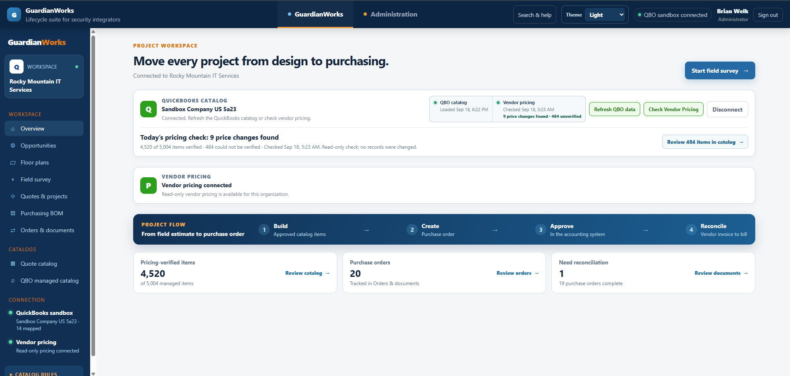
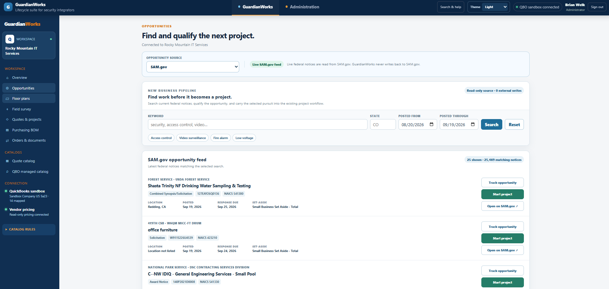
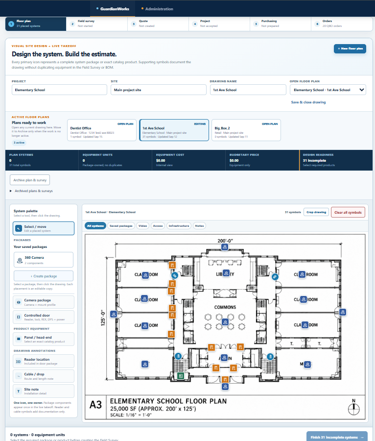
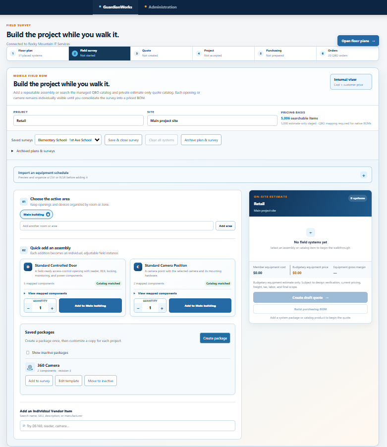
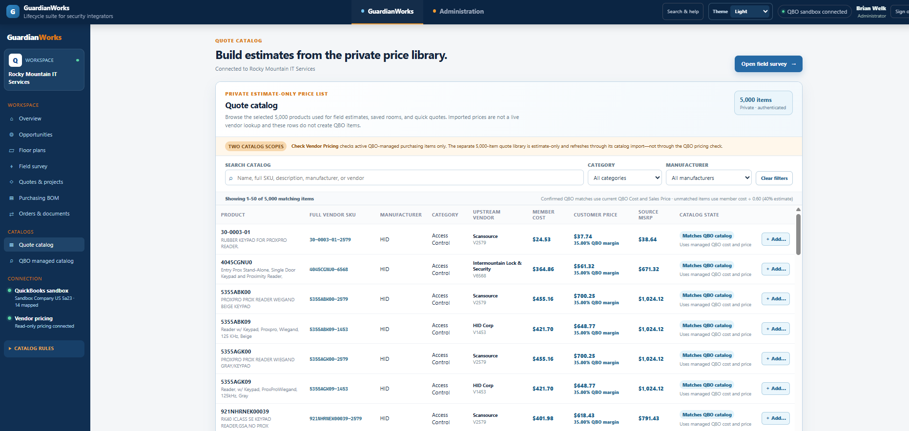
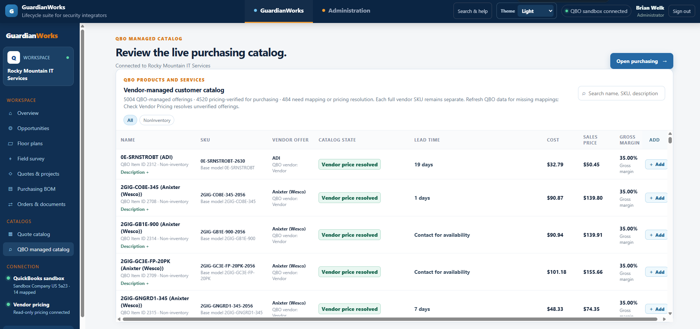
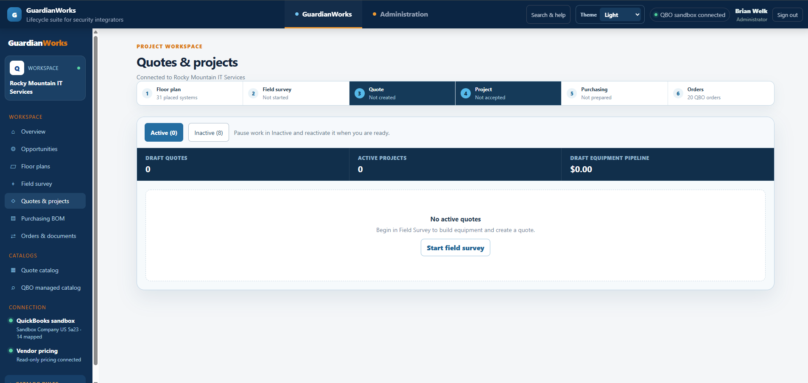
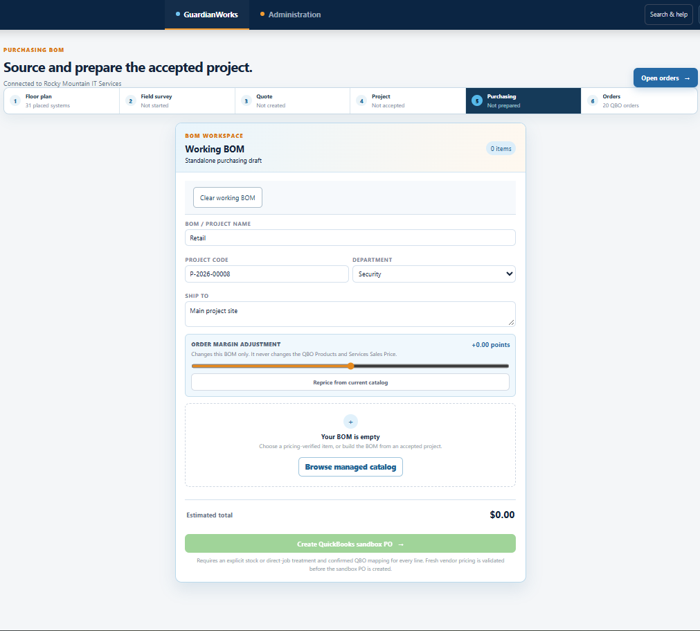
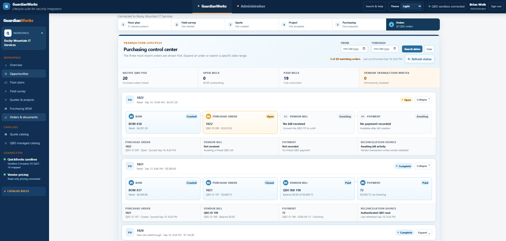

Opportunity-to-purchase operations platform
Channel Pricing Integration Lab
GuardianWorks connects opportunity intake, visual site design, field surveys, multichannel estimating, quoting, purchasing preparation, current pricing review, and QuickBooks sandbox reconciliation in one project lifecycle.
- Role
- Product designer, workflow architect, and full-stack developer
- Platform
- Node.js, JavaScript, SQLite, REST integrations, and QuickBooks Online sandbox
- Controls
- Read-only upstream pricing, explicit review, and sandbox-only accounting writes

Interactive tour
Follow the actual application screens.
Choose any stage to see a real GuardianWorks capture with notes on the workflow and its controls. The tour is read-only and does not imitate the signed-in application.
The operating problem
Keep project information intact as work moves between teams and systems.
Security integration projects can start with a bid opportunity, move to a floor plan and field survey, become a quote, and eventually turn into purchasing and accounting documents. When those stages live in separate tools, equipment identity, quantities, pricing assumptions, and project context are repeatedly re-entered.
The application is designed around continuity. The same project lineage moves from discovery through design and estimating into purchasing, while catalog and pricing rules determine what is ready for execution and what still requires human review.
Current workflow
From finding work to reconciling the purchase.
- Read-only SAM.gov opportunity discovery with local pursuit tracking and project start actions; other provider profiles use the same local handoff pattern
- Visual floor plans with reusable system packages and individually placed devices
- Field-survey workflow with saved packages, room/area organization, and CSV/XLSX equipment-schedule import
- Private 18,969-item quote catalog combining managed, staged, selected API, and direct-vendor estimate offers by buying channel
- Separate 5,004-item QuickBooks-managed channel catalog with 4,520 pricing-verified items in the live September sandbox
- Quote and project stages that preserve scope before purchasing preparation
- Purchasing BOM workspace with project coding, ship-to information, margin controls, and current-catalog repricing
- Native purchase-order, vendor-bill, payment, and reconciliation tracking from the accounting system
- Background pricing checks that identify changes without silently rewriting catalog data
Actual application screens
The current GuardianWorks workflow
These are actual GuardianWorks captures already published in the portfolio. The guided tour pairs them with current facts verified in the live app on September 27, 2026. Some counts in the images predate that check.








Catalog architecture
Estimating breadth is separated from purchasing authority.
The private quote catalog now compares channel, staged, selected API, and direct-vendor offers. The 18,969-item estimate library supports design and budgetary work even when an offer is not mapped or pricing-verified for purchasing. The separate QBO-managed catalog contains 5,004 channel items in the live September check.
Before purchasing, the workflow returns to managed catalog and current vendor-pricing state. The September overview shows 4,520 verified items and 484 needing review. The read-only check does not automatically apply price changes.
Automation boundary
Prepare aggressively. Write conservatively.
The application automates searching, matching, project carry-forward, catalog comparison, pricing verification, document linking, and status refreshes. The controls become stricter as the workflow approaches a financial transaction.
Upstream vendor pricing remains read-only. SAM.gov discovery is live in the captured view, while other provider profiles can use external research and local pursuit intake. The accounting connection is a QuickBooks sandbox, and creating a PO requires an explicit operator action. Saving a quote or project does not create a transaction.
Portfolio note